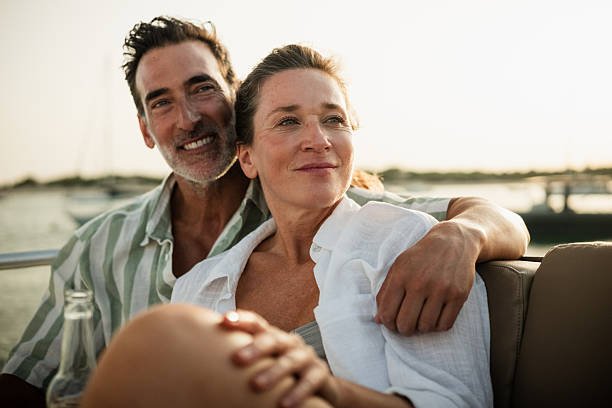
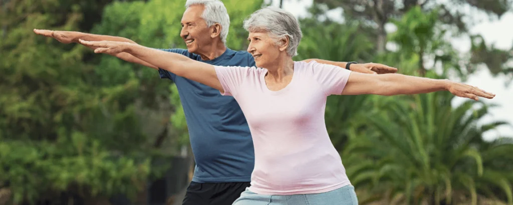

Vitalidade e Bem-Estar 40+
A fase dos 40 anos em diante é ideal para renovar a sua energia e cuidar do seu bem-estar com uma abordagem personalizada. O nosso programa ajuda-o(a) a manter o equilíbrio físico e mental, promovendo mais disposição, saúde e qualidade de vida para aproveitar cada momento ao máximo.
Saiba Mais
Longevidade Ativa e Saudável
A longevidade ativa e saudável propõe um estilo de vida que vai muito além de viver mais, focando em viver com autonomia, disposição e bem-estar em todas as fases. Com hábitos equilibrados, cuidados preventivos e foco na saúde física e mental, é possível desfrutar de cada ano com mais energia, propósito e qualidade de vida.
Saiba Mais
Equilíbrio Sistêmico Corporal
O equilíbrio sistémico corporal propõe uma abordagem integrada da saúde, considerando que todos os sistemas do organismo funcionam de forma interligada e dependente. Ao alinhar os hábitos diários com as necessidades físicas e mentais, este conceito promove o bem-estar global, a harmonia interna e a capacidade natural do corpo de se regenerar e manter em pleno funcionamento.
Saiba Mais